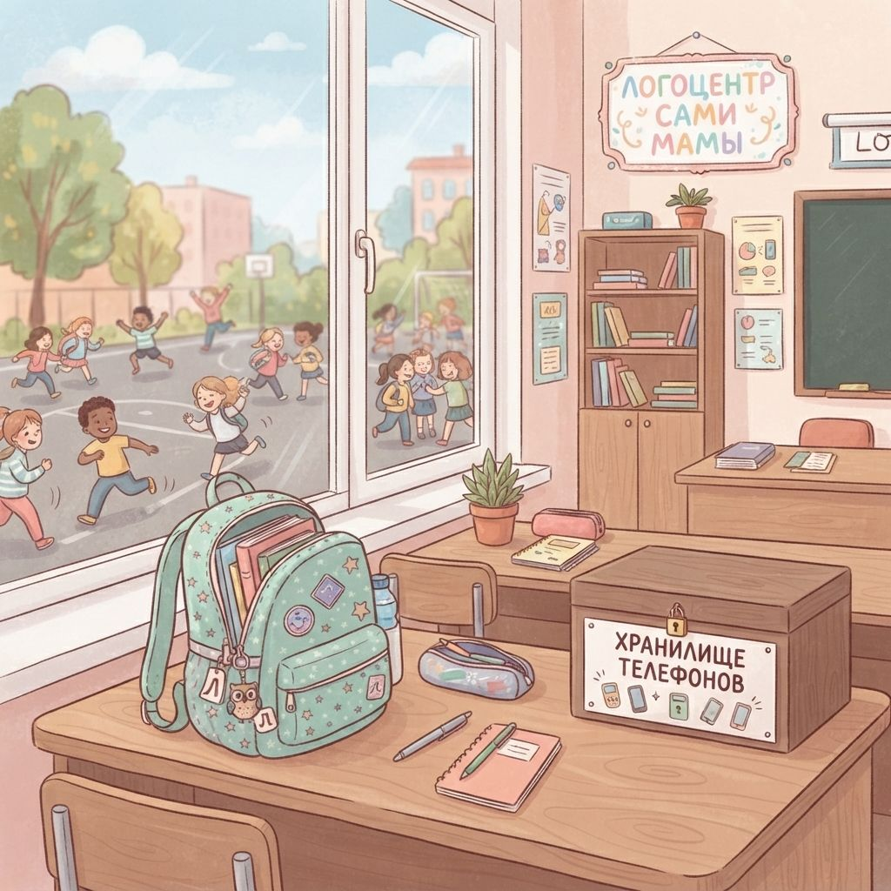

Запретили телефоны в школе - а оценки не выросли. Что это значит для тебя
2026-10-09

Когда в школе объявляют запрет на телефоны, многие мамы выдыхают: наконец-то ребёнок начнёт слушать учителя и подтянет математику. Но большое исследование, охватившее десятки тысяч школ, показало: всё не так однозначно. И в этой неоднозначности есть важные подсказки для семьи.
Что именно проверили учёные
Группа исследователей из университетов Дьюка, Мичигана и Пенсильвании проанализировала данные более чем 43 000 американских школ. Они смотрели не на один класс и не на одну параллель, а на动态 школьной жизни до и после введения запрета - в течение трёх лет. Такой масштаб позволяет говорить о закономерностях, а не о случайных совпадениях.
Оценки остались на месте
Главный сюрприз: средние баллы за тесты почти не изменились. Посещаемость тоже осталась прежней, и субъективное ощущение внимания на уроках - тоже. В старшей школе нашли маленький плюс по математике, в средней - маленький минус. То есть надежда на то, что запрет сам по себе превратит троечника в отличника, не оправдалась.
Это не значит, что запрет бесполезен. Это значит, что его эффект лежит в другой плоскости.
Первый год оказался самым трудным
В первый год после введения правила стало даже хуже: выросло число дисциплинарных нарушений, а самочувствие учеников просело. Это нормальный период адаптации, когда дети ещё не привыкли к новым рамкам.
Зато к третьему году картина изменилась:
- дисциплинарные проблемы сошли на нет;
- ощущение благополучия у учеников оказалось выше, чем до запрета;
- конфликтов стало меньше, а живого общения на переменах - больше.
Получается, выигрыш не в оценках, а в атмосфере. И это тоже важный результат, который не измеряется баллами.
Почему одного школьного правила недостаточно
Телефон, лежащий в рюкзаке, не означает, что ребёнок научился с ним обращаться. Дома он остаётся с тем же экраном, теми же играми и теми же соблазнами. Школьное правило задаёт рамку только на время уроков, а привычки формируются в семье - каждый день, за ужином, в очереди, перед сном.
Что можно сделать дома уже сейчас
- Договориться о зонах без телефона: обеденный стол, спальня, дорога в школу.
- Поставить зарядку в общей комнате, а не у кровати.
- Самой откладывать телефон, когда ребёнок рядом: он копирует то, что видит.
- Спрашивать, что ребёнок смотрит и читает, а не только сколько времени он тратит.
- Оценивать результат за полгода-год, а не за неделю.
Как разговаривать с ребёнком о запрете
Поддержи правило школы, даже если ребёнку оно не нравится. Первые недели он может быть раздражительным - исследование как раз показало, что переходный период бывает непростым.
Спокойно объясни, зачем это нужно
Без нотаций и нравоучений: "В школе так легче слушать учителя и общаться друг с другом". Дети принимают правила, которые понимают. Если ты сама ворчишь на школу, ребёнок будет саботировать запрет. А если ты спокойно держишь линию, ему проще принять новый порядок.
Если ребёнок ещё маленький и телефона у него нет
Всё равно пригодится. Привычки начинаются раньше, чем первый смартфон. Если дошкольник видит, что мама отвечает на сообщения за ужином и листает ленту в очереди, он запоминает: телефон - это норма в любой момент. Чем раньше в семье появятся простые правила, тем легче будет в 10-12 лет.
На что смотреть через полгода
Не на оценки, а на настроение и отношения. Стал ли ребёнок чаще рассказывать о переменах? Меньше ли конфликтов с одноклассниками? Легче ли ему сосредоточиться за домашним заданием? Если да, запрет работает на то, ради чего его вводили.
Если ребёнок стал замкнутым или тревожным, поговори с классным руководителем: возможно, ему не хватает общения без экрана. Цель запрета - не пятёрки, а спокойный день и живое общение. Это тоже очень важный результат.
Частые вопросы
Помогает ли запрет телефонов в школе улучшить оценки?
Исследование 43 000 школ показало, что средние баллы почти не меняются. Небольшой плюс есть только по математике в старших классах.
Сколько времени нужно, чтобы запрет телефонов дал эффект?
Первый год обычно самый трудный: растут нарушения дисциплины и падает самочувствие. К третьему году атмосфера становится лучше, чем до запрета.
Что делать дома, если в школе запретили телефоны?
Договориться о зонах без телефона, ставить зарядку в общей комнате, самой откладывать телефон при ребёнке и оценивать результат за полгода-год.
Баркаева Елена, психолог и основатель логопедического центра "Сами Мамы"